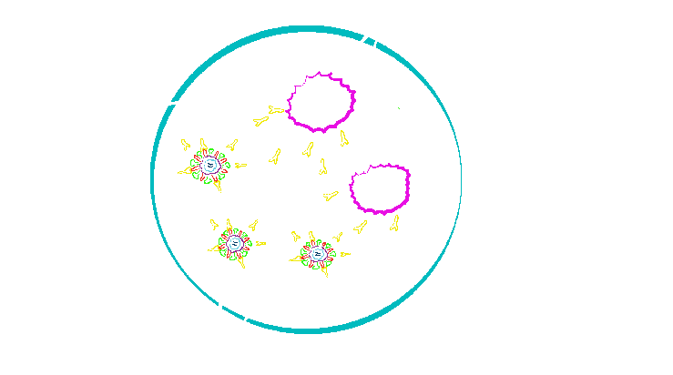
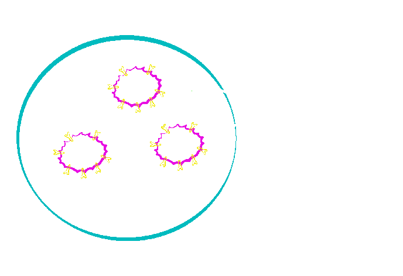
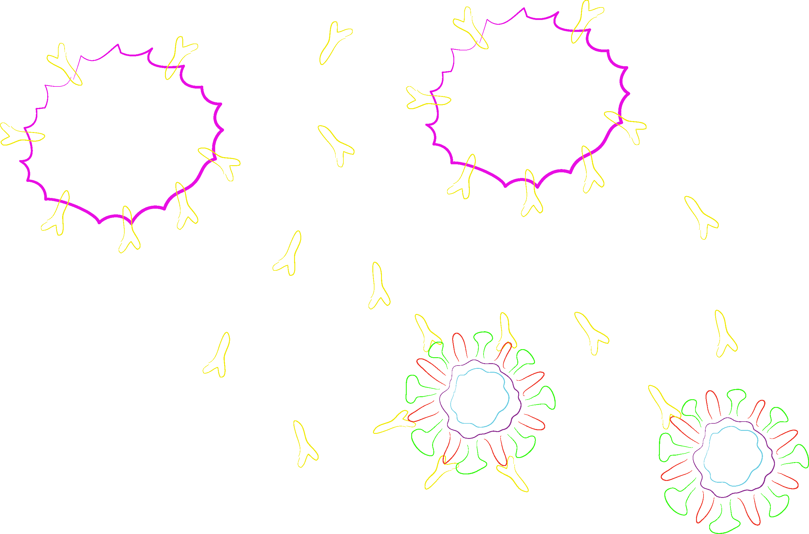

As vacinas podem conter os microorganismos causadores da doença mortos ou atenuados. Podem conter ainda os antígenos ou o DNA responsável por codificar tais antígenos.

Quando a pessoa é vacinada, as células do sistema imunológico detectam os antígenos.

Os linfócitos produzem anticorpos, e se diferenciam em células de memória. Os anticorpos se ligam aos antígenos para que eles sejam destruídos.

As células de memória permanecem por muitos anos e caso a pessoa seja infectada pelo microorganismo para o qual a vacina foi produzida, as células de memória imediatamente produzirão os anticorpos, que levarão à destruição do patógeno.

Indivíduo é contaminado pelo patógeno ao qual foi vacinado

Ao detectarem a presença do patógeno, as células de memórias produzem os anticorpos

Os anticorpos destroem o patógeno e o indivíduo se livra da doença antes mesmo de sentir os sintomas.

Você sabia que o Ministério da Saúde divulgou que os casos de suspeita de dengue no Brasil aumentaram 279% entre 1º de janeiro e 23 de março de 2013 em comparação com o mesmo período do ano passado? Pesquisas têm sido desenvolvidas no Brasil na tentativa de desenvolver uma vacina para a dengue. Vamos aprender um pouco sobre esta vacina?
Para a fabricação da vacina de DNA contra o vírus da Dengue são utilizados plasmídeos contendo o DNA responsável por codificar um antígeno presente nos quatro tipos de vírus da Dengue. Vamos ver então as etapas da fabricação da vacina. Acompanhe no livro!